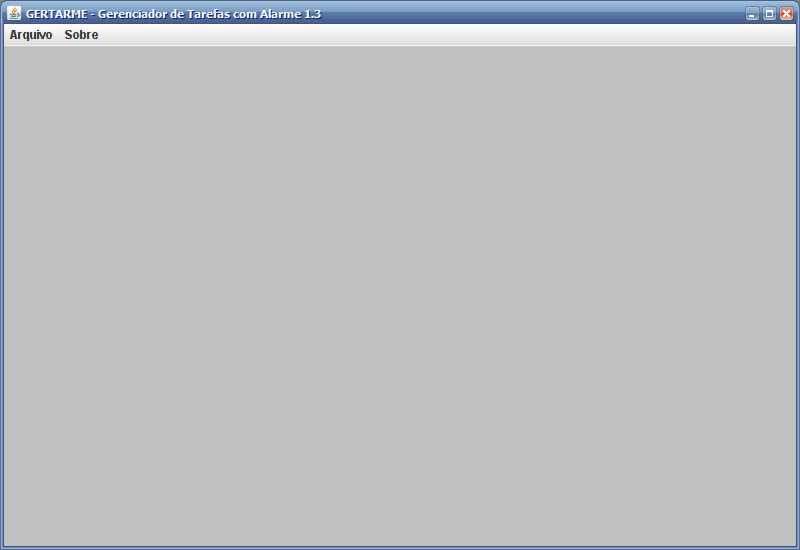
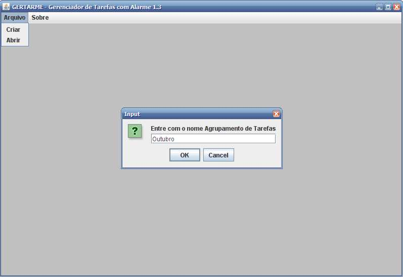
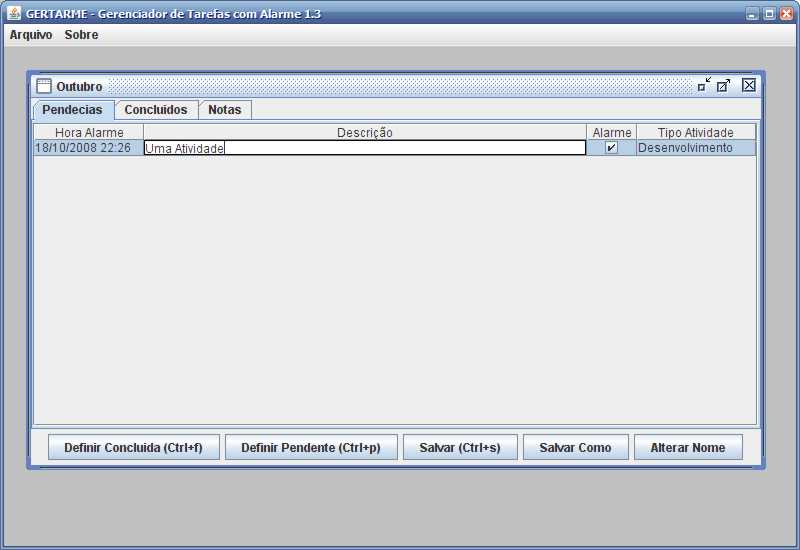
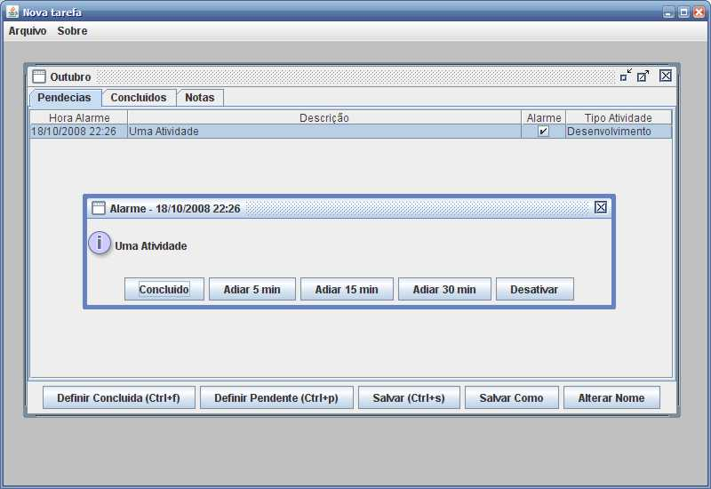
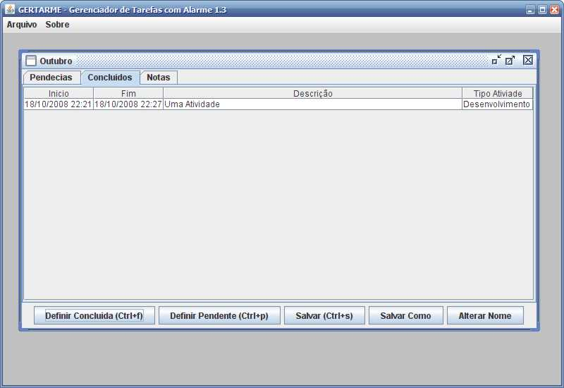
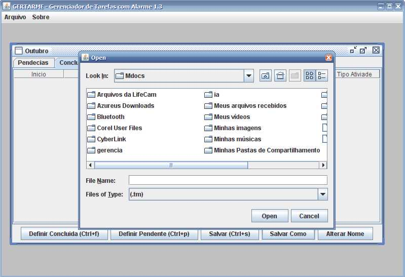
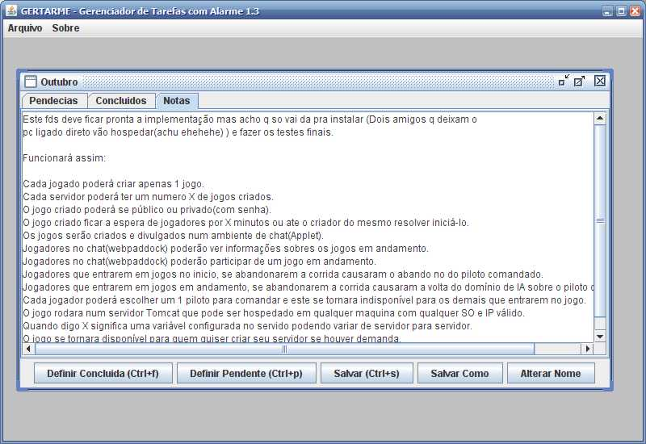
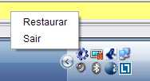

Gertarme é um simples programa para agendar e gerenciar tarefas.

No menu principal é possível criar um agrupamento de tarefas.

Com o foco de ação na aba "Pendências" uma nova tarefa pode ser criada pressionando-se a tecla insert e apagada com a tecla delete.

Hora de alarme e a caixa de marcação alarme definem como o sistema de alarme irá funcionar. Quando este for acionado um bip será emitido.

As tarefas podem ser movidas entre as abas Pendências e Concluídos com os botões de atalho a qualquer momento.

Quando um novo agrupamento de tarefas for criado deve ser Salvo em disco com o botão "Salvar Como" depois de escolhido o local
em disco este agrupamento de tarefas(ou o último aberto ou criado) será aberto automaticamente sempre que o programa for iniciado.

Na aba de Notas, texto puro pode ser guardado e será salvo junto com o arquivo das tarefas.

Ao clicar no botão fechar da janela o programa irá para a barra de ícone podendo ser restaurado ou fechado no menu.

 This
Web Page Created with PageBreeze Free
Website Builder
This
Web Page Created with PageBreeze Free
Website Builder